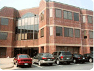
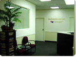
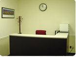
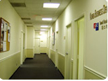
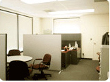
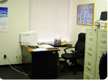
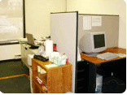
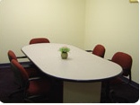
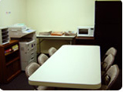

지역별 소개 및 신청


 미국 수출BI 워싱턴
미국 수출BI 워싱턴
워싱턴DC 수출인큐베이터는 2004년 3월 미국 동부에 진출하는 국내 중소기업의 현지 조기정착을 용이케하고, 이를 통하여 미국 수출 및 판로확대를 위하여 미국 워싱턴DC 인근 버지니아주 Fairfax 카운티에 설립되었습니다.
입지여건
-
미국 내의 대표적인 고소득 인구 밀집 지역
- ’04년도 가구당 평균소득($88,133)이 미 전국 평균($44,684)보다 월등하게 높은 지역
- 동일생활권역 인구 590만명, 사업 영향 권역 인구 4,000만 명인 거대 소비지역
- 버지니아, 메릴랜드, 펜실베니아, 웨스트버지니아, 사우스캐롤라이너, 노스캐롤라이너, 조지아 등 7개주를 통할하는 마케팅 중심지역
-
IT제품의 최대 시장이며 글로벌마케팅의 최적지
- 9.11테러 이후 보안, 통신 분야 등에 매년 500억USD의 정부자금이 집행되어 IT제품 마케팅 중심으로 변모부각되는 지역
- 정보통신, 군수산업, 가전 산업의 대표적 기업이 몰려는 IT마케팅의 중심지
- 수도권부터 공략하여 미전국과 세계로 확산시키는 전략적 마케팅의 시발지역
-
생명공학 관련 산업의 중심지
존스홉킨스대학교, 국립보건연구원(NIH), 식품의약청(FDA)등 생명공학 기술 선도 기관이 30분 거리에 있고 관련업체와 기술진이 밀집된 지역
-
한국산 제품에 대한 높은 호감
- 워싱턴포스트(2005/6월), 미국공영방송(2005/8월), VOA-TV(2006/3월)등이 워싱턴수출인큐베이터와 입주업체제품을 소개하는 등 언론기관을 수시로 활용
- 한국산 컬러TV, 휴대폰 등의 호평에 힘입어 중소기업 제품에도 관심 고조
- 인구의 40%를 차지하는 한인(20만명), 아시안, 히스패닉인들이 다양한 한국산 제품을 인기리에 구매하고 있어서 한국 제품에 대한 탄탄한 수요가 있음
-
현지인 전문가의 일관된 도움을 받을 수 있는 워싱턴수출인큐베이터
제품 홍보, 바이어 발굴, 미팅 동행, 계약체결 등 전 과정에 걸쳐 완벽한 서비스 제공
-
마케팅 유망 제품
-
가정용 및 사무용 IT기술 관련 제품
- 소형 가전제품, 사무기기용 제품, 보안 관련 제품, 군수제품, 의료장비
-
생활필수품 신기술 제품, 일반 가정용품, 팬시제품, 가공식품, 건강용품
- 기술개발은 산호세, 마케팅은 워싱턴 수출인큐베이터에서!
-
가정용 및 사무용 IT기술 관련 제품
진출 유망 사업 분야
-
가정용 및 사무용 IT 기술 관련 산업
- 연방 정부 및 관련 기관에서 발주하는 거액의 사업 영향으로 통신, 보안, 사무 관련 산업의 마케팅 최적지
- 소형가전 제품, 사무기기 제품, 보안관련 제품, 군수용품, 의료장비
-
생명공학 관련 산업
NIH, FDA, 존스홉킨스대학교 등으로부터 풍부한 연구비 지원, 우수한 연구 인력, 선도적 업체, 풍부한 벤처 투자자금이 갖춰져 있으므로 생명관련 기업에게 사업 기회 풍부
-
섬유기계
- 고소득 고학력 소비자가 밀집된 지역이어서 새롭고 편리하고, 고품질 소비제품의 시장 개척 가능성 매우 높음.
- 기존의 제품에 컴퓨터 기술을 접목시키면 매우 유리함.
- 일반 가정용품, 팬시제품, 가공식품, 건강용품, 신기술 제품 등
입주면적/주요시설
- 총면적 6,000 ft² ( 556.38㎡)
- 입주업체 사무실 1인실(약 13㎡) 9실, 2인실(약 20㎡) 3실
- 회의실 약 26.4㎡
- 휴게실 겸 식당 약 13.2㎡(냉장고, 전자레인지, 식탁 등 비치)
- 상담실 약 13.2㎡
- 공동 창고 약 16.5㎡
- 수출 사랑방 약 13.2㎡
- 기타 공용실 팩스, 복사기, 빔프로젝터 등 구비
입주부담금
-
수출인큐베이터
- 입주보증금 : 500만원
- 월 임차료(1년차 기준) : 20만원 내외
- 실비부담 : 전기료, 인터넷 사용료, 전화료, 팩스 사용료, 냉난방비 - 공유오피스 : 무료
찾아오시는 길
-
택시이용
요금은 약 30달러로 25분내외 소요(요금은 팁 포함하여 약 45달러) -
차량 이용시
[워싱턴 덜레스국제공항에서 출발시]
Dulles Airport Access Road ⇒ 267번 도로 중 No-Toll Road East ⇒ 7번도로(Leesburg Pike) East ⇒ 650번 도로(Gallows Road) ⇒ 한미과학협력센터 빌딩
[로널드레이건 공항에서 출발시]
George Washington Memorial Parkway ⇒ George Washington Memorial Parkway ⇒ 123번 도로 (Chain Bridge Road/Dolly Madison Boulevard) South ⇒ International Road ⇒ 한미과학협력센터 빌딩 -
철도 또는 지하철 이용시
워싱턴 D.C.의 UNION STATION ⇒ METRO(RED Line) 승차 ⇒ Metro Center 역에서 ORANGE Line West 방향선으로 환승 ⇒ DUNN LORING 역 하차 ⇒ TAXI 이용 1952 GALLOWS ROAD 하차
요금 : METRO 요금 : 승차 시간에 따라 다름($1.35-$ 3.90) TAXI 요금 : $ 20내외
시설사진

건물전경
인큐베이터 입구
안내데스크
사무실복도
중소기업수출사랑방
사무실
사무실- ConferenceRoom

Meeting Room
Lounge
위치
 주소|1952 Gallows Road, Suite 110, Vienna, VA, 22182, USA
주소|1952 Gallows Road, Suite 110, Vienna, VA, 22182, USA
담당자
- 김영태 소장
- 전화: +1-571-633-9600
- 팩스: +1-571-633-9517
- 이메일: kyt@kosmes.or.kr